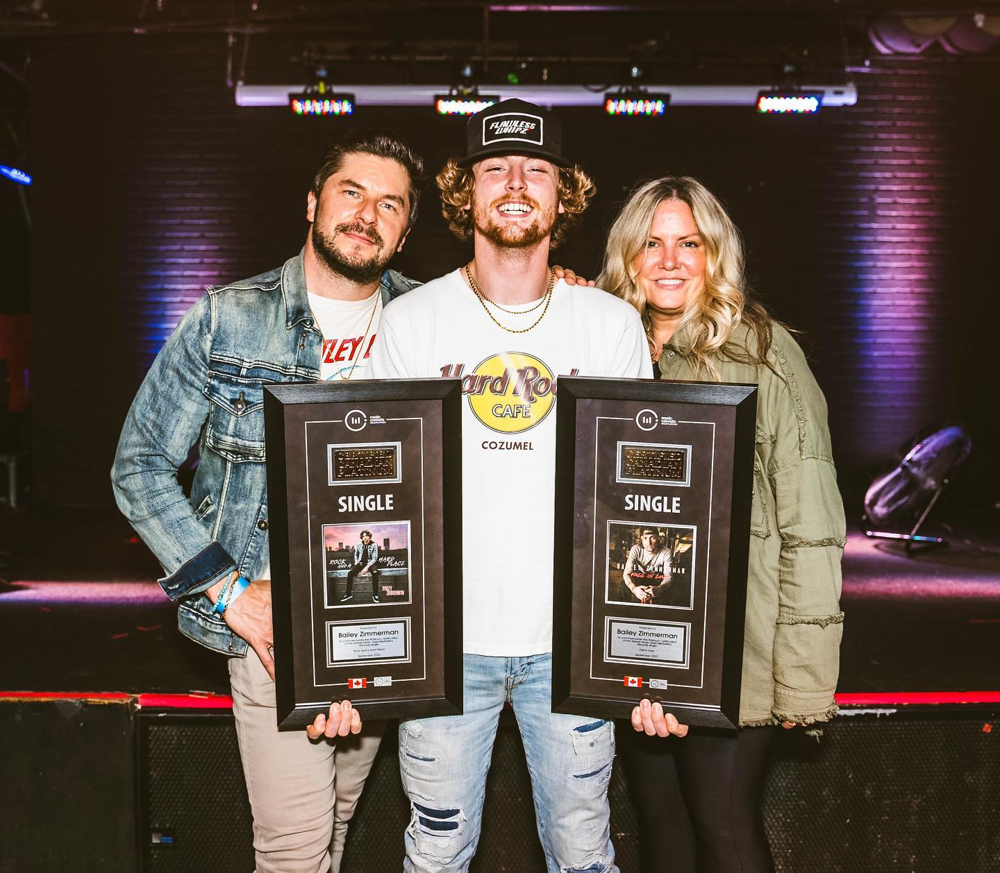
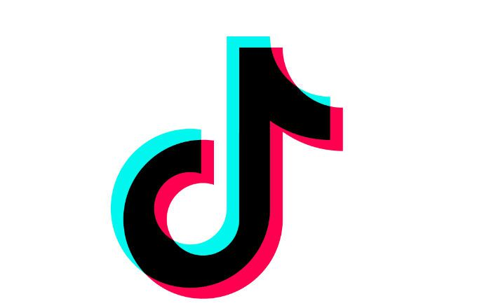

<!DOCTYPE html>
<html>
  <head>
    <meta charset="utf-8" />
    <meta name="viewport" content="width=device-width, initial-scale=1" />
    <title>Zimmerman Tours</title>
    <link
      rel="stylesheet"
      href="https://cdn.jsdelivr.net/npm/bulma@0.9.4/css/bulma.min.css"
    />
    <link rel="stylesheet" href="./style.css" />
  </head>
</html>
<body>
  <h4 class="has-text-centered">BAILEY ZIMMERMAN</h4>
  <nav class="navbar" role="navigation" aria-label="main navigation">
    <a
      role="button"
      class="navbar-burger"
      aria-label="menu"
      aria-expanded="false"
      data-target="navbarBasicExample"
    >
      <span aria-hidden="true"></span>
      <span aria-hidden="true"></span>
      <span aria-hidden="true"></span>
    </a>
    <div id="navbarBasicExample" class="navbar-menu">
        <div class="is-flex is-justify-content-space-around nav">
        <a class="navbar-item is-size-3 has-text-centered" href="index.html">
          Home
        </a>
        <a class="navbar-item is-size-3 has-text-centered" href="about.html">
          About
        </a>
        <a
          class="navbar-item is-size-3 has-text-centered"
          href="music-videos.html"
        >
          Music Videos
        </a>
        <a
          class="navbar-item is-size-3 has-text-centered"
          href="discography.html"
        >
          Discography
        </a>
        <a class="navbar-item is-size-3 has-text-centered" href="tour.html">
          Tour
        </a>
      </div>
    </div>
  </nav>

  <div class="columns">
    <div class="column">
      
    </div>
    <div class="column is-size-1 has-text-centered">
        about
        <p>
            Bailey Zimmerman is a twenty one year old singer/songwriter 
            born and raised in the small town of Louisville, IL. Growing up, 
            Zimmerman’s father owned a trucking business and the two of them would 
            listen to hour after hour of country radio on long hauls across state lines. 
            Back at home, Bailey’s mom instilled in him a life-long appreciation for the 
            power chords and edgy vocals of 80’s hair rock. At the age of sixteen, Zimmerman 
            got his first job at the local meat processing plant and hasn’t stopped working 
            since. From long hours on the gas pipeline, to late nights of backbreaking 
            roadwork, Bailey embodies the old school American values of a hard work and 
            dependability. Zimmerman applies the same steadfast mentality to his music. 
            Through his plainspoken charm, contagious enthusiasm and genuine portrayal of 
            life on the back roads, Bailey has amassed a following of over three hundred 
            thousand loyal tik tok fans. His breakout single “Never Comin’ Home” was 
            characterized by the straightforward authenticity for which he is known 
            and loved. His second release “Small Town Crazy” is a hometown tribute, 
            summer anthem and drinking song, delivered in the grit and gravel of 
            Zimmerman’s unmistakably Southern drawl. Bailey is co-managed by Simon 
            Tikhman/Chief Zaruk of The Core Entertainment and Chris Nilsson/Scott 
            Frazier of 10th St Entertainment. No love song has lines like this:  Cause love’s a smoke ring/ Wrapped around your finger/ One second it’s a blessing/ And the next it’s already gone/ A broken heart, I’m a walking testimony/ My confession is a lesson/ That I’m pouring out in this song.

            The rising country star wrote the track about heartbreak and loss, explaining to Billboard; “After you lose that special person you never thought you’d lose, it’s hard to want to give love a second chance. We felt like we could relate to a lot of people by shining a light on that feeling.”
            
            </p>
    </div>
  </div>
  
<br>
<br>

<header class="header is-size-1 has-text-centered">MEET BAILEY ZIMMERMAN</header>
           
            <a href="https://www.instagram.com/bailey.zimmerman/?hl=en">
                <button class="button is-large">
                  <span class="icon is-medium">
                    
                  </span>
                  <span>Instagram</span>
                </a>
                </button>
            
                <a href="https://twitter.com/baileyzimmerman?ref_src=twsrc%5Egoogle%7Ctwcamp%5Eserp%7Ctwgr%5Eauthor">
                    <button class="button is-large">
                      <span class="icon is-medium">
                        
                      </span>
                      <span>Twitter</span>
                    </a>
                    </button>
                
 <a href="https://www.facebook.com/BaileyZimmermanMusic/">
                    <button class="button is-large">
                      <span class="icon is-medium">
                        
                      </span>
                      <span>Facebook</span>
                    </a>
                    </button>
                    <a href="https://www.tiktok.com/@bailey.zimmerman?lang=en">
                        <button class="button is-large">
                          <span class="icon is-medium">
                            
                          </span>
                          <span>Tiktok</span>
                        </a>
                        </button>
                    
 <footer class="footer">
                <div class="content has-text-centered">
                  <p>
                    <strong>bailey zimmerman</strong> by <a href="https://jgthms.com">claire anglin</a>. The source code is not licensed
                    <a href="http://opensource.org/licenses/mit-license.php">MIT</a>. The website content
                    is not licensed <a href="https://nossi.edu/?campaignid=19166036121&adgroupid&adid&gclid=Cj0KCQiAnNacBhDvARIsABnDa6_xZuHKQJm9LH2WQmZI5NpHE9mSqPPAB3wkRGm5zOUCcFs0l6C2SjAaAi4FEALw_wcB">nossi college of art/web language 2</a>.
                  </p>
                </div>
              </footer>
        


              <script>
                document.addEventListener("DOMContentLoaded", () => {
                  // Get all "navbar-burger" elements
                  const $navbarBurgers = Array.prototype.slice.call(
                    document.querySelectorAll(".navbar-burger"),
                    0
                  );
            
                  // Add a click event on each of them
                  $navbarBurgers.forEach((el) => {
                    el.addEventListener("click", () => {
                      // Get the target from the "data-target" attribute
                      const target = el.dataset.target;
                      const $target = document.getElementById(target);
            
                      // Toggle the "is-active" class on both the "navbar-burger" and the "navbar-menu"
                      el.classList.toggle("is-active");
                      $target.classList.toggle("is-active");
                    });
                  });
                });
              </script>
</body>
